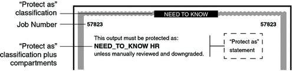

|
|||||||||||||
|
1. Labels in Trusted Extensions Software 3. Making a Label Encodings File (Tasks) 4. Labeling Printer Output (Tasks) Security Text on Banner and Trailer Pages Configuring Security Text on Print Jobs (Task Map) How to Specify the Words in PRINTER BANNERS How to Specify Handling Instructions in CHANNELS How to Set a Minimum Protect As Classification 5. Customizing LOCAL DEFINITIONS 6. Example: Planning an Organization's Labels |
Specifying the Protect As ClassificationThe protect as classification is printed in two places:
In the following figure, the NEED_TO_KNOW protect as classification is printed at the top of the banner page. The protect as statement reads: This output must be protected as: This statement is followed by the protect as classification along with compartments from the label: NEED_TO_KNOW HR This statement is followed by: unless manually reviewed and downgraded. Figure 4-4 Protect As StatementFor example, a site uses INTERNAL_USE_ONLY as the minimum protect as classification. The site has three classifications with the values that are shown in the first two columns of the following table. The third column shows the protect as classification. This classification is printed on the banner and trailer pages for the print job when the classification in the left column is in the job's label. Table 4-1 Effect of Minimum Protect As Classification on Printer Output
As the preceding table illustrates, any print job whose label includes either the PUBLIC or the INTERNAL_USE_ONLY classification would print INTERNAL_USE_ONLY in the Protect as statement and at the top and bottom of banner and trailer pages. Any print jobs whose label includes the NEED_TO_KNOW classification would print NEED_TO_KNOW in the same locations. |
||||||||||||
|